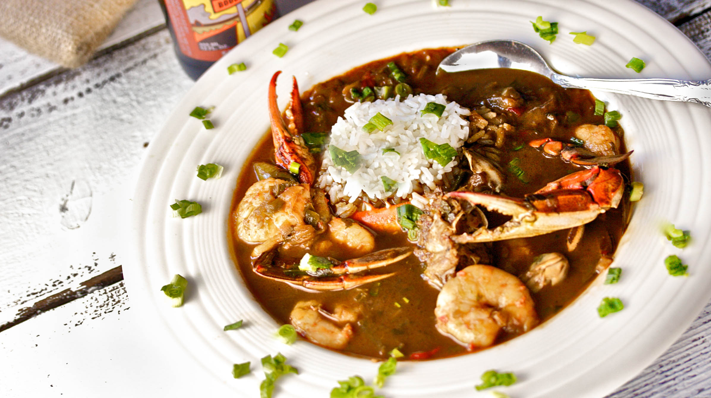

Chicken and Sausage Gumbo

Chicken and Sausage Gumbo
Rich and hearty soul food, this stew will satisfy anyone on a cold winter day
Ingredients
- 4 bone-in, skin-on chicken thighs
- 3 teaspoon kosher salt
- 2 teaspoon ground pepper
- 1/2 cup grapeseed oil
- 1/2 cup all-purpose flour
- 1 large onion, diced
- 1 large bell pepper, diced
- 2 ribs celery, diced
- 10 cloves garlic, cruhshed
- 4 bay leaves
- 12 ounce amber-style beer
- 5 cup chicken stock
- 1/2 teaspoonn cayenne pepper
- 1 pound andouille sausage, cut into bite-size pieces
- rice for serving
- sliced green onions
Recipe instructions
- Preheat the oven to 400F. Season chicken thighs and place on a rimmed baking sheet, roast for 20 minutes. Remove from oven and set both thighs and pan drippings aside.
-
- In a heavy Dutch oven, heat oil and flour over medium heat. Stir constantly until a dark chocolate color, 45 minutes. Add onion, bell pepper, and celery afterwards. Finally, add garlic and bay leaves and continue cooking.
- Deglze the pot with beer and scrape the bottom. Stir constantly until it returns to a simmer. Add stock and continue stirring until it returns to a simmer. Season with salt, pepper, and cayenne pepper. Add chicken thighs, pan drippings, and sausage. Simmer for 3 hours, stirring every 30 minutes.
- Serve with rice. Garnish with sliced green onions
Return to top
Return to main page